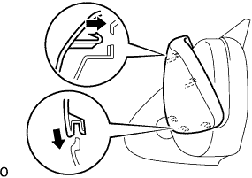
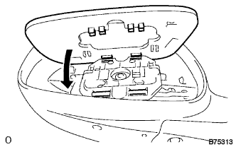

Otari Vie Miller Assembly Assembly |
| 1. Outmiller Cover LH installation |
|  |
The claws at the bottom of the mirror cover are adjusted.
The claws at the top of the mirror cover are mixed and the outmiller Cover LH is attached.
After installing the outrammer cover, make sure that there is no step in the cover and mirror bondy.
| 2. Outer Ryabi Umiller LH installation |
|  |
Insert two claws of the Otari View Miller LH into the actuator hole.
The two clips are mixed and the Otari View Mirror LH is attached.